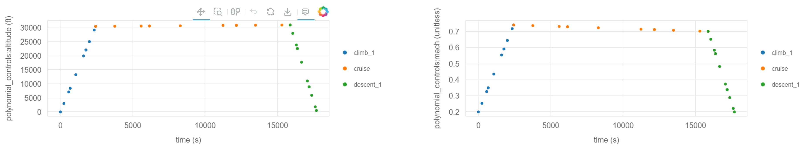
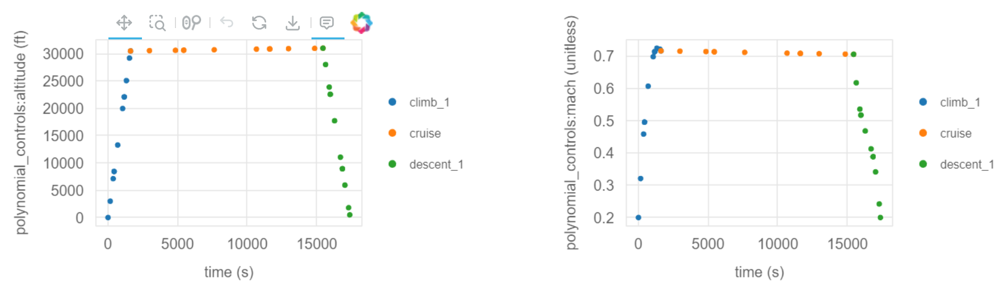

Optimizing the Mission Profile of a Conventional Aircraft#
Building upon our previous example, this notebook introduces more complexity into the Aviary optimization process. Please see the simple mission example if you haven’t already.
Increasing Complexity in Phase Information#
We will now modify the phase_info object from our prior example by increasing num_segments to 3 and setting mach_optimize to True in each of the three phases.
This means that we’ll query the aircraft performance at more points along the mission and also give the optimizer the freedom to choose an optimal Mach profile.
Note
We are still using a mach_polynomial_order and altitude_polynomial_order of 1, which means that the optimal Mach profiles for each phase will be linear (straight lines).
Later in this example, we increase this order which will allow the optimizer to choose a more complex Mach profile.
phase_info = {
'pre_mission': {'include_takeoff': False, 'optimize_mass': True},
'climb_1': {
'subsystem_options': {'aerodynamics': {'method': 'computed'}},
'user_options': {
'num_segments': 3,
'order': 3,
'distance_solve_segments': False,
'mach_optimize': True,
'mach_polynomial_order': 1,
'mach_initial': (0.2, 'unitless'),
'mach_final': (0.72, 'unitless'),
'mach_bounds': ((0.18, 0.74), 'unitless'),
'altitude_optimize': False,
'altitude_polynomial_order': 1,
'altitude_initial': (0.0, 'ft'),
'altitude_final': (30500.0, 'ft'),
'altitude_bounds': ((0.0, 31000.0), 'ft'),
'throttle_enforcement': 'path_constraint',
'time_initial_bounds': ((0.0, 0.0), 'min'),
'time_duration_bounds': ((27.0, 81.0), 'min'),
},
'initial_guesses': {'time': ([0, 54], 'min')},
},
'cruise': {
'subsystem_options': {'aerodynamics': {'method': 'computed'}},
'user_options': {
'num_segments': 3,
'order': 3,
'mach_optimize': True,
'mach_polynomial_order': 1,
'mach_initial': (0.72, 'unitless'),
'mach_final': (0.72, 'unitless'),
'mach_bounds': ((0.7, 0.74), 'unitless'),
'altitude_optimize': False,
'altitude_initial': (30500.0, 'ft'),
'altitude_final': (31000.0, 'ft'),
'altitude_bounds': ((30000.0, 31500.0), 'ft'),
'throttle_enforcement': 'boundary_constraint',
'time_initial_bounds': ((27.0, 81.0), 'min'),
'time_duration_bounds': ((85.5, 256.5), 'min'),
},
'initial_guesses': {'time': ([54, 171], 'min')},
},
'descent_1': {
'subsystem_options': {'aerodynamics': {'method': 'computed'}},
'user_options': {
'num_segments': 3,
'order': 3,
'mach_optimize': True,
'mach_polynomial_order': 1,
'mach_initial': (0.72, 'unitless'),
'mach_final': (0.2, 'unitless'),
'mach_bounds': ((0.18, 0.74), 'unitless'),
'altitude_optimize': False,
'altitude_initial': (31000.0, 'ft'),
'altitude_final': (500.0, 'ft'),
'altitude_bounds': ((0.0, 31500.0), 'ft'),
'throttle_enforcement': 'path_constraint',
'time_initial_bounds': ((112.5, 337.5), 'min'),
'time_duration_bounds': ((26.5, 79.5), 'min'),
},
'initial_guesses': {'time': ([225, 53], 'min')},
},
'post_mission': {
'include_landing': False,
'constrain_range': True,
'target_range': (1915, 'nmi'),
},
}
Running Aviary with Updated Parameters#
Let’s run the Aviary optimization with our updated phase_info object in the same way as before.
import aviary.api as av
prob = av.run_aviary(
'validation_cases/validation_data/test_models/aircraft_for_bench_FwFm.csv', phase_info
)
Warning: No input value found for Aircraft.Design.TYPE. Assuming the aircraft is of type: AircraftTypes.TRANSPORT.
Warning: No input value found for Aircraft.HorizontalTail.NUM_TAILS. Assuming there is 1 horizontal tail.
/usr/share/miniconda/envs/test/lib/python3.13/site-packages/openmdao/utils/relevance.py:1296: OpenMDAOWarning:The following groups have a nonlinear solver that computes gradients and will be treated as atomic for the purposes of determining which systems are included in the optimization iteration:
traj.phases.climb_1.rhs_all.solver_sub
traj.phases.cruise.rhs_all.solver_sub
traj.phases.descent_1.rhs_all.solver_sub
/usr/share/miniconda/envs/test/lib/python3.13/site-packages/openmdao/solvers/linear/linear_rhs_checker.py:175: SolverWarning:DirectSolver in 'traj.phases.climb_1.indep_states' <class StateIndependentsComp>: 'rhs_checking' is active but no redundant adjoint dependencies were found, so caching has been disabled.
/usr/share/miniconda/envs/test/lib/python3.13/site-packages/openmdao/solvers/linear/linear_rhs_checker.py:175: SolverWarning:DirectSolver in 'traj.phases.cruise.indep_states' <class StateIndependentsComp>: 'rhs_checking' is active but no redundant adjoint dependencies were found, so caching has been disabled.
/usr/share/miniconda/envs/test/lib/python3.13/site-packages/openmdao/solvers/linear/linear_rhs_checker.py:175: SolverWarning:DirectSolver in 'traj.phases.descent_1.indep_states' <class StateIndependentsComp>: 'rhs_checking' is active but no redundant adjoint dependencies were found, so caching has been disabled.
/usr/share/miniconda/envs/test/lib/python3.13/site-packages/openmdao/core/total_jac.py:1696: DerivativesWarning:The following design variables have no impact on the constraints or objective at the current design point:
traj.climb_1.t_initial, inds=[0]
Total number of variables............................: 66
variables with only lower bounds: 57
variables with lower and upper bounds: 9
variables with only upper bounds: 0
Total number of equality constraints.................: 66
Total number of inequality constraints...............: 27
inequality constraints with only lower bounds: 1
inequality constraints with lower and upper bounds: 26
inequality constraints with only upper bounds: 0
Error=-3 returned from MUMPS in Solve.
Error=-3 returned from MUMPS in Solve.
Number of Iterations....: 35
(scaled) (unscaled)
Objective...............: 2.5497041301543417e+00 2.5497041301543417e+00
Dual infeasibility......: 9.0862395493305384e-10 9.0862395493305384e-10
Constraint violation....: 2.5968706050957706e-13 2.5968706050957706e-13
Variable bound violation: 0.0000000000000000e+00 0.0000000000000000e+00
Complementarity.........: 9.0944348828554859e-08 9.0944348828554859e-08
Overall NLP error.......: 9.0944348828554859e-08 9.0944348828554859e-08
Number of objective function evaluations = 48
Number of objective gradient evaluations = 20
Number of equality constraint evaluations = 48
Number of inequality constraint evaluations = 48
Number of equality constraint Jacobian evaluations = 37
Number of inequality constraint Jacobian evaluations = 37
Number of Lagrangian Hessian evaluations = 0
Total seconds in IPOPT
Optimization Problem -- Optimization using pyOpt_sparse
================================================================================
Objective Function: _objfunc
Objectives
Index Name Value
0 mission:objectives:fuel 2.549704E+00
Variables (c - continuous, i - integer, d - discrete)
Index Name Type Lower Bound Value Upper Bound Status
2 traj.climb_1.t_initial_0 c 0.000000E+00 0.000000E+00 0.000000E+00 lu
Constraints (i - inequality, e - equality)
Index Name Type Lower Value Upper Status Lagrange Multiplier (N/A)
78 traj.climb_1.throttle[path] i 0.000000E+00 9.999995E-01 1.000000E+00 u 9.00000E+100
= 8.880
EXIT: Optimal Solution Found.
Now that we’ve run Aviary, we can look at the results.
Open up the automatically generated traj_results_report.html and scroll through it to visualize the results.
Here are the altitude and Mach profiles:

We note two major changes compared to our first example.
The first is that we have many more points where the flight dynamics were evaluated because we increased num_segments to 3.
This means that we have more points shown on the resulting plots.
The second is that the optimizer chose the optimal Mach profile.
Again, each phase’s Mach profile is constrained to be linear because we set mach_polynomial_order and altitude_polynomial_order to 1.
However, we see that the optimizer chose to decrease the Mach number during the cruise-climb segment to minimize fuel burn.
Note
Remember, we did not allow the optimizer to control the altitude profile, so that remains fixed.
Let’s take a look at the optimization objective, mission:fuel:
print(prob.get_val(av.Mission.FUEL, units='kg')[0])
10204.486281955187
We can print fuel_burned in pounds easily, thanks to OpenMDAO’s automatic unit conversion feature:
print(prob.get_val(av.Mission.FUEL, units='lb')[0])
22497.04130154391
Modifying the Aircraft Configuration#
Next, we’ll modify the aircraft configuration by decreasing the wing aspect ratio by 0.2.
This results in a less slender wing, which will increase the induced drag.
We’ve made this change and have a modified aircraft data file called modified_aircraft.csv.
Re-running the Optimization with Modified Aircraft#
Now, let’s re-run the optimization with the modified aircraft configuration.
We’ll use the same phase_info object as before, but we’ll change the input deck to point to our new aircraft file.
prob = av.run_aviary('modified_aircraft.csv', phase_info)
Warning: No input value found for Aircraft.Design.TYPE. Assuming the aircraft is of type: AircraftTypes.TRANSPORT.
Warning: No input value found for Aircraft.HorizontalTail.NUM_TAILS. Assuming there is 1 horizontal tail.
/usr/share/miniconda/envs/test/lib/python3.13/site-packages/openmdao/utils/relevance.py:1296: OpenMDAOWarning:The following groups have a nonlinear solver that computes gradients and will be treated as atomic for the purposes of determining which systems are included in the optimization iteration:
traj.phases.climb_1.rhs_all.solver_sub
traj.phases.cruise.rhs_all.solver_sub
traj.phases.descent_1.rhs_all.solver_sub
/usr/share/miniconda/envs/test/lib/python3.13/site-packages/openmdao/solvers/linear/linear_rhs_checker.py:175: SolverWarning:DirectSolver in 'traj.phases.climb_1.indep_states' <class StateIndependentsComp>: 'rhs_checking' is active but no redundant adjoint dependencies were found, so caching has been disabled.
/usr/share/miniconda/envs/test/lib/python3.13/site-packages/openmdao/solvers/linear/linear_rhs_checker.py:175: SolverWarning:DirectSolver in 'traj.phases.cruise.indep_states' <class StateIndependentsComp>: 'rhs_checking' is active but no redundant adjoint dependencies were found, so caching has been disabled.
/usr/share/miniconda/envs/test/lib/python3.13/site-packages/openmdao/solvers/linear/linear_rhs_checker.py:175: SolverWarning:DirectSolver in 'traj.phases.descent_1.indep_states' <class StateIndependentsComp>: 'rhs_checking' is active but no redundant adjoint dependencies were found, so caching has been disabled.
/usr/share/miniconda/envs/test/lib/python3.13/site-packages/openmdao/core/total_jac.py:1696: DerivativesWarning:The following design variables have no impact on the constraints or objective at the current design point:
traj.climb_1.t_initial, inds=[0]
Total number of variables............................: 66
variables with only lower bounds: 57
variables with lower and upper bounds: 9
variables with only upper bounds: 0
Total number of equality constraints.................: 66
Total number of inequality constraints...............: 27
inequality constraints with only lower bounds: 1
inequality constraints with lower and upper bounds: 26
inequality constraints with only upper bounds: 0
Error=-3 returned from MUMPS in Solve.
Error=-3 returned from MUMPS in Solve.
Error=-3 returned from MUMPS in Solve.
Error=-3 returned from MUMPS in Solve.
Error=-3 returned from MUMPS in Solve.
Optimization Problem -- Optimization using pyOpt_sparse
================================================================================
Objective Function: _objfunc
Objectives
Index Name Value
0 mission:objectives:fuel 2.563711E+00
Variables (c - continuous, i - integer, d - discrete)
Index Name Type Lower Bound Value Upper Bound Status
2 traj.climb_1.t_initial_0 c 0.000000E+00 0.000000E+00 0.000000E+00 lu
Constraints (i - inequality, e - equality)
Index Name Type Lower Value Upper Status Lagrange Multiplier (N/A)
78 traj.climb_1.throttle[path] i 0.000000E+00 9.999996E-01 1.000000E+00 u 9.00000E+100
Number of Iterations....: 37
(scaled) (unscaled)
Objective...............: 2.5637109399241482e+00 2.5637109399241482e+00
Dual infeasibility......: 3.8936229147355101e-09 3.8936229147355101e-09
Constraint violation....: 7.3245080366615962e-12 7.3245080366615962e-12
Variable bound violation: 0.0000000000000000e+00 0.0000000000000000e+00
Complementarity.........: 9.0972541887907971e-08 9.0972541887907971e-08
Overall NLP error.......: 9.0972541887907971e-08 9.0972541887907971e-08
Number of objective function evaluations = 53
Number of objective gradient evaluations = 22
Number of equality constraint evaluations = 53
Number of inequality constraint evaluations = 53
Number of equality constraint Jacobian evaluations = 39
Number of inequality constraint Jacobian evaluations = 39
Number of Lagrangian Hessian evaluations = 0
Total seconds in IPOPT
= 9.033
EXIT: Optimal Solution Found.
The case again converged in relatively few iterations. Let’s take a look at the fuel burn value:
print(prob.get_val(av.Mission.FUEL, units='kg')[0])
10268.02010235122
As expected, it’s a bit higher than our prior run that had a larger aspect ratio.
Increasing the Polynomial Control Order#
Next, we’ll increase the mach_polynomial_order and altitude_polynomial_order to 3 for the climb and descent phases.
This means that the optimizer will be able to choose a cubic Mach and altitude profile per phase instead of a straight line.
We’ll use the original aircraft configuration for this run.
Note
We’ll use the IPOPT optimizer for this problem as it will handle the increased complexity better than SLSQP.
phase_info['climb_1']['user_options']['mach_polynomial_order'] = 3
phase_info['climb_1']['user_options']['altitude_polynomial_order'] = 3
phase_info['cruise']['user_options']['mach_polynomial_order'] = 1
phase_info['cruise']['user_options']['altitude_polynomial_order'] = 1
phase_info['descent_1']['user_options']['mach_polynomial_order'] = 3
phase_info['descent_1']['user_options']['altitude_polynomial_order'] = 3
prob = av.run_aviary(
'validation_cases/validation_data/test_models/aircraft_for_bench_FwFm.csv', phase_info
)
Warning: No input value found for Aircraft.Design.TYPE. Assuming the aircraft is of type: AircraftTypes.TRANSPORT.
Warning: No input value found for Aircraft.HorizontalTail.NUM_TAILS. Assuming there is 1 horizontal tail.
/usr/share/miniconda/envs/test/lib/python3.13/site-packages/openmdao/utils/relevance.py:1296: OpenMDAOWarning:The following groups have a nonlinear solver that computes gradients and will be treated as atomic for the purposes of determining which systems are included in the optimization iteration:
traj.phases.climb_1.rhs_all.solver_sub
traj.phases.cruise.rhs_all.solver_sub
traj.phases.descent_1.rhs_all.solver_sub
/usr/share/miniconda/envs/test/lib/python3.13/site-packages/openmdao/solvers/linear/linear_rhs_checker.py:175: SolverWarning:DirectSolver in 'traj.phases.climb_1.indep_states' <class StateIndependentsComp>: 'rhs_checking' is active but no redundant adjoint dependencies were found, so caching has been disabled.
/usr/share/miniconda/envs/test/lib/python3.13/site-packages/openmdao/solvers/linear/linear_rhs_checker.py:175: SolverWarning:DirectSolver in 'traj.phases.cruise.indep_states' <class StateIndependentsComp>: 'rhs_checking' is active but no redundant adjoint dependencies were found, so caching has been disabled.
/usr/share/miniconda/envs/test/lib/python3.13/site-packages/openmdao/solvers/linear/linear_rhs_checker.py:175: SolverWarning:DirectSolver in 'traj.phases.descent_1.indep_states' <class StateIndependentsComp>: 'rhs_checking' is active but no redundant adjoint dependencies were found, so caching has been disabled.
/usr/share/miniconda/envs/test/lib/python3.13/site-packages/openmdao/core/total_jac.py:1696: DerivativesWarning:The following design variables have no impact on the constraints or objective at the current design point:
traj.climb_1.t_initial, inds=[0]
Total number of variables............................: 70
variables with only lower bounds: 57
variables with lower and upper bounds: 13
variables with only upper bounds: 0
Total number of equality constraints.................: 66
Total number of inequality constraints...............: 27
inequality constraints with only lower bounds: 1
inequality constraints with lower and upper bounds: 26
inequality constraints with only upper bounds: 0
Optimization Problem -- Optimization using pyOpt_sparse
================================================================================
Objective Function: _objfunc
Objectives
Index Name Value
0 mission:objectives:fuel 2.514606E+00
Variables (c - continuous, i - integer, d - discrete)
Index Name Type Lower Bound Value Upper Bound Status
2 traj.climb_1.t_initial_0 c 0.000000E+00 0.000000E+00 0.000000E+00 lu
Constraints (i - inequality, e - equality)
Index Name Type Lower Value Upper Status Lagrange Multiplier (N/A)
Number of Iterations....: 30
(scaled) (unscaled)
Objective...............: 2.5146058653739223e+00 2.5146058653739223e+00
Dual infeasibility......: 1.8603120802488011e-03 1.8603120802488011e-03
Constraint violation....: 7.9157820348515611e-07 7.9157820348515611e-07
Variable bound violation: 0.0000000000000000e+00 0.0000000000000000e+00
Complementarity.........: 9.1796819598252068e-08 9.1796819598252068e-08
Overall NLP error.......: 7.9157820348515611e-07 1.8603120802488011e-03
Number of objective function evaluations = 31
Number of objective gradient evaluations = 31
Number of equality constraint evaluations = 31
Number of inequality constraint evaluations = 31
Number of equality constraint Jacobian evaluations = 31
Number of inequality constraint Jacobian evaluations = 31
Number of Lagrangian Hessian evaluations = 0
Total seconds in IPOPT = 6.623
EXIT: Optimal Solution Found.
And let’s print out the objective value, fuel burned:
print(prob.get_val(av.Mission.FUEL, units='kg')[0])
10045.283230902023
The added flexibility in the mission allowed the optimizer to reduce the fuel burn compared to the linear Mach profile case.
Looking at the altitude and Mach profiles, we see that the optimizer chose a more subtly complex Mach profile:

Conclusion#
This example demonstrated how to use Aviary to optimize a more complex mission. We increased the number of segments in the mission, allowed the optimizer to choose the optimal Mach profile, and increased the polynomial control order to allow for more complex Mach profiles. We also modified the aircraft configuration to demonstrate how Aviary can be used to quickly evaluate the impact of design changes on the mission performance.